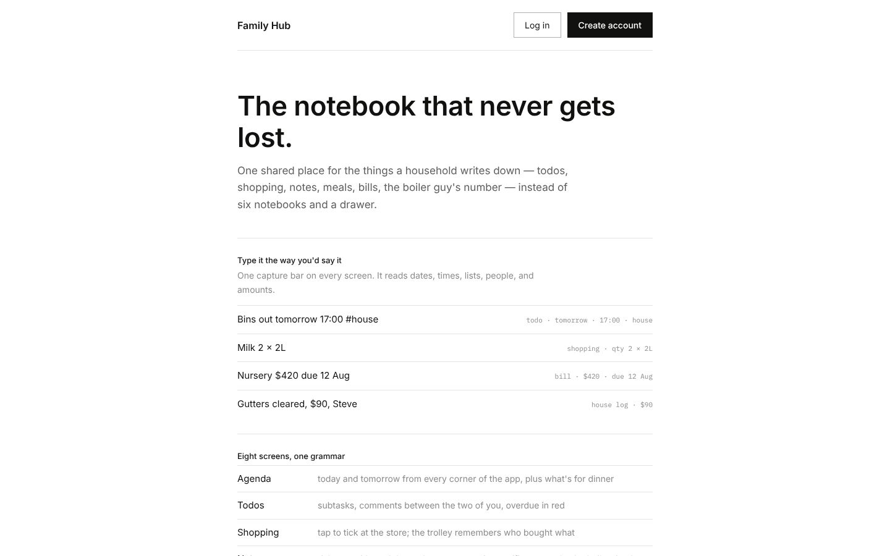
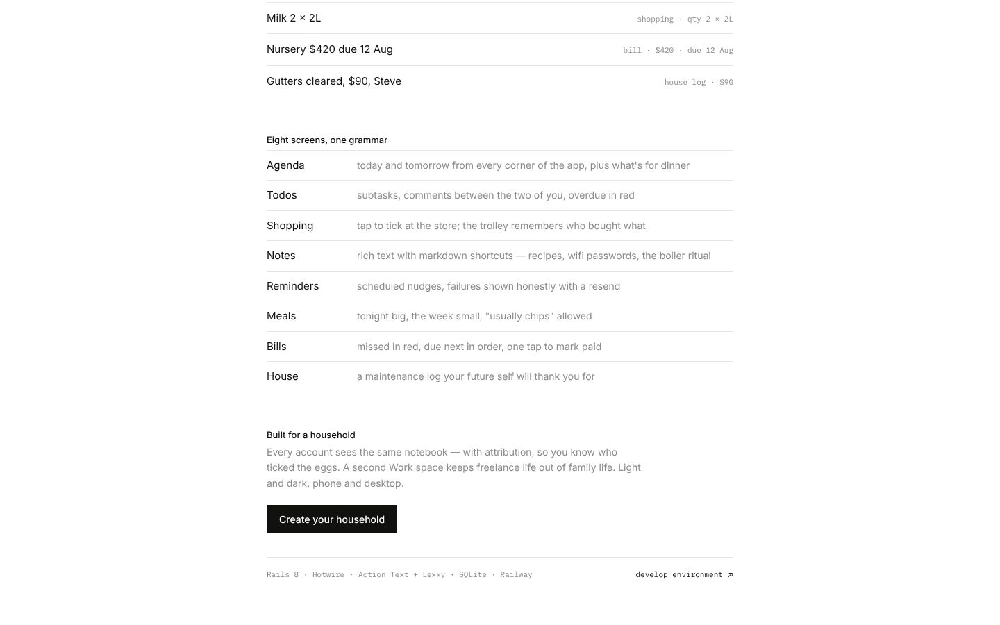

Family Hub
A shared notebook for a household
Todos, shopping, notes, meals, bills and a house log in one place instead of six notebooks and a drawer. One capture bar on every screen reads plain sentences: “Nursery $420 due 12 Aug” becomes a bill, “Milk 2 × 2L” goes on the shopping list. Everyone in the household sees the same notebook, with who ticked what.
Rails 8 · Hotwire · Action Text · SQLite · RailwayIn QAVisit →

